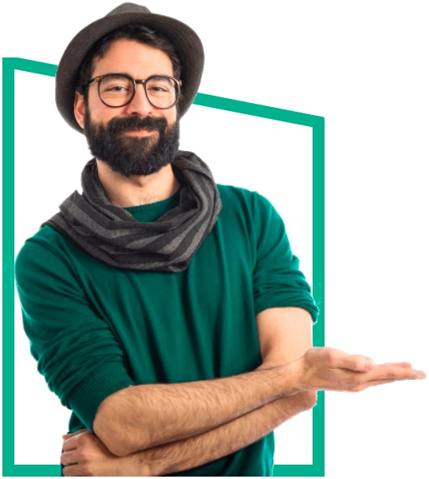

Olá, sou o
Enzo Pascal
Profissional UI/UX & Web Designer
Especialista em Visual Design e Design Strategy. Como profissional, meu foco é criar experiências significativas para as pessoas.


Sobre
Quem eu sou?
Designer brasiliense, 29 anos, apaixonado por desenvolvimento de interfaces e viciado em tecnologia. Nos últimos 10 anos trabalhei em empresas de tecnologia, comunicação e design. Sempre com foco em produtos digitais. Em minha carreira, desenvolvi tanto habilidades técnicas, quanto de gestão e liderança de equipes.
UX Strategy
UX Research
Sketch
UX Writer
Studio Digital: Um Design Library versátil, com foco na colaboração e
documentação. Construído para ser utilizado em diferentes projetos,
por todo o time de design e melhorar as entregas.
Melhores Marcas: Solução institucional com e-commerce integrado. A
empresa oferece materiais de construção, bricolagem, jardinagem e
EPIs, entre outros.
UX Case: Sistema para o SAMU de São Paulo, voltado para a gestão de
ocorrências, de efetivo e recursos, das operações deflagradas em todo
o território nacional.